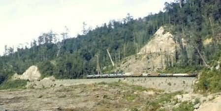
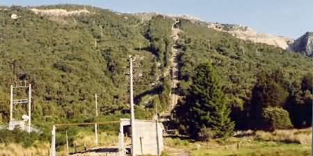
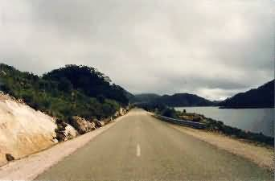
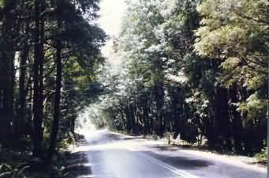
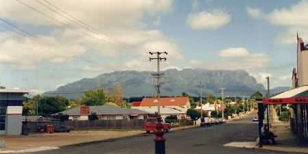
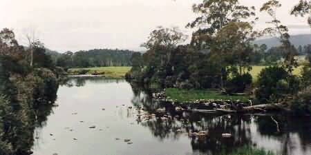

NAVIGATION
TOP of Page
MAIN Page
HOME Page
PREV Page
NEXT Page
ON THIS PAGE
Rosebery to Renison
Renison to Devonport
Trip to Paradise
TASMANIAN TOUR
North West
Central North
North East
East Coast
South East
South West
Highlands
West Coast
North Coast
|
From Rosebery to Renison Bell
The distance is approx 250km on the Lyell Highway and the tarred coast road. Head
towards Queenstown. You are in tramway country now, so keep an eye out for any
narrow gauge track formations leading away from the road. Rosebery,
population 2,500, on the Pieman river, owes its life to the discovery of gold in the
local creek in 1893.

Emu Bay Railway train with five locomotives near Rosebery
Electrolytic Zinc company treatment plants concentrate copper, lead and zinc
plus silver and gold. Turn off uphill at the towns only traffic lights to the EBR
rail siding. I spotted the nearby free swimming pool from the sweltering cabin of
an EBR locomotive shunting the siding on a hot summers day. Guess where I went the
next day. Williamsford is a detour off the highway 5km south of Rosebery.
Follow the pylons of the old bucket way for 5km up the hill. This ghost town
featured a twin 1.6km cable haulage railway (1899), from the Hercules Mine
on top of Mt Read to the ore bins in the valley. This was still working in
1978.

Williamsford Cableway to the Hercules Mine on Mt Read
TOP
MAIN
HOME
PREV
NEXT
From Renison Bell to Devonport
Remains can be found of the shunting yard and the station area. Further along the
yard a sign points to a 3 hour return walk to Montezuma Falls (104m), spraying
over the remains of the rail bridge. Renison Bell, population 1,000 on the
Pieman River, is now the largest tin mine in Australia. Begun in 1905, it loads
directly onto the Emu Bay Railroad sidings.
Instead of turning right to Zeehan, turn left and head west for 5km towards the ghost
town of Dundas. The road follows the formation of the Zeehan to Dundas Tramway
to enter a small valley. Remnants of the townstead such as house chimneys and bedframes
remain. Travel another 2 km to the small mine entrance which was still worked in the
1990's. Continue south down the highway for another 10km and turn left onto the Lake
Alexander Road at the Henty Glacial Moraine sign.

The Hentry Glacial Moraine Road
Head along the road for 1km to the viewing area. You can continue for another 30km through
photogenic lakeside scenery to the Murchison highway just south of Tullah. Turn right to
head north over the bridge towards Somerset and Burnie on the north coast. Keep heading
North to the big Waratah crossroad. Two roads lead to the north coast.
The right turn is new and heads throught the old Emu Bay Railway stations of Hampshire,
Highclere and Ridgley. The older left road winds under the overhanging trees
of the Parrawe area and through the spectacular Hellyer Gorge to Somerset.
Be careful should you park to photograph the trees as the roadside may subside. Turn right
at Bass Strait towards Devonport.

Hellyer Gorge Trees
TOP
MAIN
HOME
PREV
NEXT
An interesting Day Trip to Paradise
If you have time before the boat departs, head South for a 100km day round trip.
Sheffield, population 900, is famed for its many murals that decorate the whole
town. The local Kentish Plains support sheep, dairying and crops.

Sheffield, with the Kentish Hills in the background
Lake Barrington was the site for the 1990 World Rowing Championships. Enter the
picnic area at Roland, with its Lavender Farm, on the southern end of the lake. The
Mersey-Forth Hydroelectric Scheme is the most complex in Tasmania and contains
seven dams and three tunnels. Drive 10km south to tiny Paradise, nestling beside
Mount Roland (1,234m).

This is Paradise - Accept No Substitute
Railton, population 950, with its 700m deep deposits of limestone (130 million
tonnes) supporting the Goliath Cement Works (1928). Latrobe, population 3,400,
used to be a port with shipyards on the Mersey river. It is now famous for producing world
leading cyclists and axemen. The worlds first Axemans Carnival was held in 1891, and led
to the United Australian Axemans Association. The Cycling Club (1896) hosts Australia's
premier Latrobe Wheel cycling race every Boxing Day. Victorian age shops line the main
street
TOP
MAIN
HOME
PREV
NEXT
|